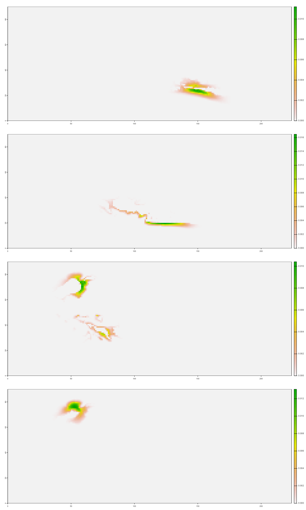

Installation
The tag package can be installed from github with:
# install.packages("devtools")
devtools::install_github("KSiwicke/tag")Load the tag package:
library(tag)
devtools::load_all() # To delete
bathy <- cod_ex[[1]]
stars::st_dimensions(bathy)$x$delta # resolution in x direction
#> [1] 3000
stars::st_dimensions(bathy)$y$delta # resolution in y direction
#> [1] -3000
h <- stars::st_dimensions(bathy)$x$delta
land <- bathy %>%
dplyr::mutate(depth = ifelse(depth < 15, 0, 1)) # 15-m cutoff, but can change as needed
fish_data <- cod_ex[[3]]
L <- cod_ex[[4]]You can estimate diffusion coefficients through maximum likelihood estimation. The est_1d function returns the negative log likelihood.
tag::est_1d(log_D = log(90), h = h, L = L, land = t(land$depth))
#> [1] 185.7278
# example, returns the negative log likelihood
#
# Params <- list(log_D = log(90))
# Data <- list(h = h, L = L, land = t(land$depth))
# est_1D <- mle2(est_1d,
# start = Params,
# data = Data,
# method = "Brent",
# optimizer = "optim",
# lower = log(1),
# upper = log(300)) # need to choose upper and lower boundaries
# prof <- profile(est_1D)
knitr::include_graphics("d_prof.png") Need to sort out why the
likelihood is ‘jagged’, perhaps something to do with the resolution and
changing to map units?
Need to sort out why the
likelihood is ‘jagged’, perhaps something to do with the resolution and
changing to map units?
Also, when not log transforming D, the estimate appears to have been a localized minimum, and when I try to make a profile, it says that the model actually did not converge and it found a better solution that is in line with the log transformed version…
This first example uses a single D, and this no longer uses the raster but still uses the imager package to convolve.
tictoc::tic()
smooth <- tag::fwd_bck(D = 94, h = h, L = L, land = t(land$depth), fish_data = fish_data)
tictoc::toc()
#> 13.61 sec elapsed
sm_ras <- terra::rast(smooth)
par(mfrow = c(4,1))
terra::plot(sm_ras[[20]])
terra::plot(sm_ras[[40]])
terra::plot(sm_ras[[60]])
terra::plot(sm_ras[[80]])
This version only has removed raster and imager packages, and is mainly using the terra package. One main difference is that the land layer is passed in as a SpatRaster. One nice feature of this version is that there is no transposing for going between a raster and a matrix/array like there was before.
bathy <- terra::rast(cod_ex[[1]]) # load bathymetry as a stars object, but convert to terra raster
names(bathy) <- "depth"
h <- terra::res(bathy)[1] # resolution in meters
# identify land as a 0
land2 <- bathy %>%
tidyterra::mutate(depth = ifelse(depth < 15, 0, 1)) %>%
tidyterra::select(depth) # 15-m cutoff, but can change as needed
tictoc::tic()
smooth <- tag::fwd_bck_terra(D = 94, h = h, L = L, land = land2, fish_data = fish_data)
tictoc::toc()
#> 18.23 sec elapsed
sm_ras <- terra::rast(smooth)
par(mfrow = c(4,1))
terra::plot(sm_ras[[20]])
terra::plot(sm_ras[[40]])
terra::plot(sm_ras[[60]])
terra::plot(sm_ras[[80]])
err_gr <- tag::err_grid(smooth = smooth, fish_data = fish_data)
err.grid.99 <- err_gr[names(err_gr) == "q99"]
err.grid.50 <- err_gr[names(err_gr) == "q50"]
#Need to make list into one data frame with multiple polygons
polygons.99 <- err.grid.99[[1]]
for(i in 2:length(err.grid.99)) {
polygons.99 <- rbind(polygons.99, err.grid.99[[i]])
}
polygons.50 <- err.grid.50[[1]]
for(i in 2:length(err.grid.50)) {
polygons.50 <- rbind(polygons.50, err.grid.50[[i]])
}
terra::plot(bathy)
# plot(polygons.99 %>% tidyterra::filter(lyr.1 == 1), col = "gray", border = "gray", add = TRUE)
# plot(polygons.50 %>% tidyterra::filter(lyr.1 == 1), col = "blue", border = "blue", add = TRUE)
# plot(land2 %>% tidyterra::filter(depth == 0), col = "gray10", add = TRUE)